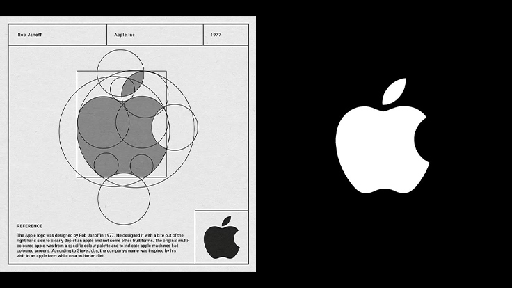

Pourquoi les logos sont-ils si importants ?
Chaque grande marque que nous connaissons aujourd'hui possède un élément commun : un logo fort et facilement reconnaissable. Lorsque l'on voit une pomme croquée, on pense immédiatement à Apple. Lorsqu'on aperçoit le "swoosh", on reconnaît instantanément Nike. Le célèbre "M" jaune évoque immédiatement McDonald's. Ces symboles sont devenus si puissants qu'ils peuvent être reconnus partout dans le monde sans qu'il soit nécessaire de lire le nom de l'entreprise.
Un logo n'est pas simplement un dessin. Il représente l'identité visuelle d'une entreprise. Il constitue souvent le premier contact entre une marque et ses clients. Avant même de découvrir vos produits ou services, les personnes voient votre logo.
Les avantages d'un logo professionnel
- D'être facilement reconnu
- De renforcer la crédibilité
- De se différencier de la concurrence
- D'améliorer la mémorisation de la marque
- De créer une image cohérente
Apple a simplifié son logo au fil des années pour le rendre plus mémorable et plus universel.

- La simplicité
- La pertinence
- L'originalité
- La polyvalence
- L'intemporalité
Les meilleurs logos sont généralement simples. Un logo trop chargé devient difficile à mémoriser.
Un logo doit refléter l'activité, les valeurs ou la personnalité de l'entreprise.
Votre identité visuelle doit se distinguer de celle de vos concurrents.
Un logo doit rester lisible sur un téléphone, une affiche, un site web ou une carte de visite.
Les tendances passent, mais un bon logo reste efficace pendant plusieurs années.
Les erreurs les plus fréquentes
De nombreuses entreprises commettent encore certaines erreurs :
- Copier le logo d'une autre marque
- Utiliser trop de couleurs
- Choisir plusieurs polices différentes
- Ajouter trop d'éléments graphiques
- Suivre une tendance sans réflexion stratégique
Ces erreurs peuvent nuire à la crédibilité de l'entreprise et compliquer son développement. Pourquoi investir dans un logo professionnel ? Un logo conçu de manière stratégique constitue un véritable investissement. Il accompagne l'entreprise dans sa communication, son marketing et son développement commercial. Un bon logo inspire confiance. Il donne une impression de sérieux et améliore la perception de la qualité des produits ou services proposés.
Conclusion
Un logo n'est pas simplement un dessin. C'est la signature visuelle d'une entreprise et l'un des investissements les plus rentables pour construire une marque durable.
Chez Afro Vecteur, nous concevons des logos stratégiques qui renforcent la crédibilité des entreprises et améliorent leur visibilité.